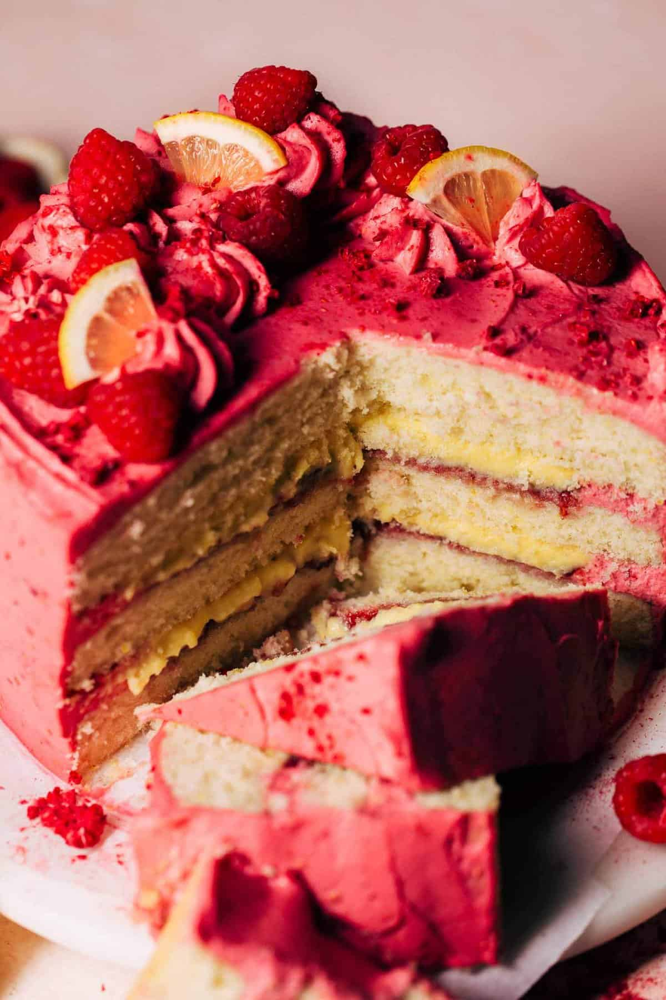

Vegan Burger: A juicy, flavorful patty made from plants. You'll never miss the meat!
Vegan Pizza: Loaded with fresh veggies and gooey vegan cheese. A slice of heaven!

Vegan Salad: Crisp and refreshing, packed with nutrients and flavors.
Vegan Pasta: Savory pasta in a rich tomato sauce with fresh herbs and vegetables.

Vegan Dessert: A sweet treat made without any animal products. Simply divine!

Vegan Smoothie: A blend of fruits and veggies for a refreshing, healthy drink.
Fact 1: Vegan diets can provide all the nutrients your body needs.
Fact 2: Switching to a plant-based diet can help reduce your carbon footprint.
Fact 3: Eating more plants can improve your overall health and well-being.